THEORY BEYOND THE CODES
Van Eyck's "Miracle of Composition":
Ante-Deleuzian Crystals of Space/Time in the Arnolfini Portrait
John Freeman
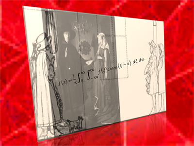
Figure 1: Illustration by Janine Debanné (adapted).
X-rays and lasers have extended human vision and multiplied its perspectives so greatly that even the perfectionist fifteenth-century philosopher Nicholas of Cusa might revise upward his low estimate of our representations of reality through our perceptions, which suffer from being "contracted to a sense organ." In the postmodern era, aesthetic experience, the very notion of looking, has been transformed for the viewer whose technologically enhanced gaze penetrates into the hidden dimensions of works such as Jan van Eyck's Arnolfini Portrait (1434). [1]
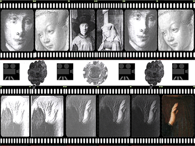
Figure 2: Adapted from Billinge and Campbell.
The numerous revisions of gestures, glances, and perspectives constituting the underpainting of van Eyck's masterpiece have been recovered by infrared reflectograms that reveal a mute symphony of pentimenti: Arnolfini's hand flutters through the stages of its composition; like images on badly spliced film, the two figures' eyes flicker through their adjustments; the wire-haired dog floats like a fuzzy electron cloud in the process of materializing in front of our eyes. The reworked mirror itself seems cognate with the artist's shifting intentions as it draws the composition into focus. A "restoration" in reverse, moving backward in time from finished product to earlier stages of composition, this process espies a hidden narrative teased out of the underdrawing's hatching and overlapping lines. This previously undisclosed narrative, realized through processes of interference and superposition, offers valuable clues as to the artist's physical planning and execution of the final image. A painting on view for over five hundred and seventy-five years suddenly has a new story to tell.
Derived from the efforts of specialists in modern optics, reflectographic analysis attests to the Portrait's ongoing allure, its magnetic ability to attract narratives around itself. Even a short view of the painting's intersections with modern critical analyses reveals a series of rubbings-out and repositionings ranking in number and quality with those executed by the painter himself. Critical "reflectography" manifested itself early on in Erwin Panofsky's claim to see through the painting an iconographic display of "disguised symbolism." Item: For Panofsky, the chandelier's single candle is symbolic of God's sacramental presence. [2] Reflecting on the painting as an object of material culture, Linda Seidel rubs out the iconographic interpretation, seeing "behind" the painting nothing more than "business as usual." In her view the Portrait is merely a receipt for the father of the bride and notarized proof for the groom to receive the dowry. She notes that other multifigure works of van Eyck "were made to serve as guarantors of something that was wished for -- a future reality -- rather than as records of what might have already occurred." [3] Item: For Seidel, the single candle burns only to mark the time until the financial arrangements contracted here are irrevocably sealed. Craig Harbison works "hard to avoid replacing a restrictive religious model of interpretation with one that is overly secular." What lies behind the painting for him is "a complex play of mercantile and religious motives, themselves attenuated by the couple's courtly mannerisms and novel self-fashionings." [4] Item: For him, the candle signifies sexual passion and hoped-for fertility. Grounding this interpretation in the biographical circumstance of the couple's barrenness, Harbison generates a very personalized (and speculative) narrative concerning the couple's mutual disappointment and infidelities.
Technological "narratives" such as reflectographic analysis avoid such arguments while concentrating more on how the artist has set up the conditions for this scene to be reconstructed. This study begins with the following premise: Working to resolve the technical challenges involved in representing this betrothal scene three-dimensionally and from multiple perspectives, van Eyck has created an enfolded work whose spatial configurations bear remarkable resemblances to those of holography. With its concepts of interference patterns and superimposition, pseudoscopic perspective, and virtual and real dimensions, holography provides a specialized terminology for offering a complete description of the ways in which the Portrait encompasses both space and time. Avant la lettre, in Gilles Deleuze's term "prehending" the Baroque and even the modern "crisis of property" well before the technological means for creating holograms had been established, the London panel is well worth consideration by specialists in digital media studies. Indeed, van Eyck's affinities with the medieval philosopher Nicholas of Cusa, who explores the "intellectual" eyeglasses afforded by the beryl crystal, look forward to Deleuze's own speculations about the crystal of time. That is, the Portrait's holographic properties create the Deleuzian depth of field, the virtual and actual dimensions that ensure the presentness of the past as well as the spectator's participation in the recollection of a memory. Cusa's own interests in the reflective crystal and the enfoldedness it elicits not only provide insights into what his contemporary van Eyck has accomplished, but also demonstrate how both medieval "crystallographers" anticipate Deleuze's ideas of time, representation, and universality. Finally, Fourier analysis demonstrates the crystal of space/time enacted by the Portrait dramatically underscores Anita Albus's claim that "The process of perceiving van Eyck's paintings repeats the process in which they were made." [5]
1. Creating Depth of Field
Unlike the holographer, who works with film emulsion and laser beams, van Eyck could not have actually recorded in the paint medium the phases and amplitudes giving a sense of volume to the objects and figures in this chamber. With a painter's eye, however, he has arranged the virtual and real planes of space comprising this composition so that those phases and amplitudes can be reconstructed through the viewers' conjectures. For example, although there appears to be but one mirror in the painting, a closer inspection reveals that this single mirror has both a painted and an "underdrawn" dimension to it (what holographers would call a real and a virtual dimension). The first (or "painted") mirror lies on the surface plane of the painting (its material plane). If this mirror were strictly confined to the surface plane of the painting, it would only reflect what was in front of the painting and not what lies behind the two figures, the virtual dimension. The laws of perspective require viewers to locate this mirror along the background wall of the room, a wall that constitutes a second projective plane. This second mirror lends an enfolded quality to the Portrait. At least in this Portrait, the "novel change" that Deleuze sees occurring two centuries later has already been realized:
It will be a novel change, and crucial, in the seventeenth century, when an element of a place refers directly to an element of a different plane, when characters address each other directly from one plane to another, in an organization of the picture along the diagonal, or through a gap which thus privileges the background and brings it into immediate touch with the foreground. The picture 'is internally hollowed out'. At this moment, depth becomes depth of field, whilst the dimensions of the foreground take on an abnormal size, and those of the background are reduced, in a violent perspective which does even more to unite the near and faraway. [6]
In van Eyck's painting, this "violent perspective" is created by the two mirrors, surface plane and virtual, which function like a holographic beam-splitter, a diverging lens that splits the original laser beam into reference and object beams as a means of recording a scene three-dimensionally. Christopher Outwater and Eric Hamersveld's description of the hologram as a "complex lens" describes equally well the play of object and reference occurring at the site of the mirrors. The lens/hologram is involved in "bending and forming part of the light of the reference beam, which is used for reconstructing the image, into the wavefronts of the original object, so that you may perceive the object as if it were really there." [7] Describing the hologram's ability to reconstruct an object in its full dimensions, Arthur Klein notes: "It's almost as if one built a projector in which slide (image information) and lens (focusing device) were one and the same thing!" [8] Like an exposed holographic plate, the painting contains its own "interference pattern" that allows for the original scene to be recreated multi-dimensionally.
The surface plane of the painting not only allows us to reconstruct the Portrait's virtual dimension, but it also contains the necessary information for reconstructing a real (or actual) dimension projecting from the panel. Describing the interior of the room as being "constructed in accordance with centralized perspective," Otto Pacht observes that "the perspectival recession does not end at the rear wall, as it does elsewhere, but is continued in the miniature space reflected in the mirror." [9] This "miniature," isomorphic space represents a point-by-point mapping (or "stacking") of the objects and figures in both the real and virtual dimensions comprised by the painting. In his "Mathematical Analysis of Perspective," David L. Carleton describes "the tendency of the figures to protrude from the picture space, the effect of tremendous depth in a narrow space, and the compacting of the background." [10] This foreshortening of perspective is particularly important in ensuring that the image of van Eyck and the witness projects into the real space in front of the painting. As Joseph Van der Elst points out:
The composition of the picture in three dimensions is enclosed by the far wall and by the converging side walls of the room. But the most astonishing optical directional force in the picture is the convex mirror which takes the eye of the observer back to the very point where van Eyck was standing when he observed the scene. This subtle device, almost amounting to a trick, gives a clear accent to the whole focus of the composition in space. [11]
The convexity of the mirror further ensures that the figures standing opposite the mirror, in the room's entrance, will be drawn more closely into the composition. As manufacturers warn us about our automobiles' convex mirrors, OBJECTS IN MIRROR ARE CLOSER THAN THEY APPEAR. As Deleuze might note, the background is brought into immediate touch with the foreground.
Drawing viewers into the composition itself, the Portrait creates what Deleuze describes as the Baroque effect of "Effacing not only distance, but the distinction between the spectator and the spectacle." [12] Indeed, we discover here what Anna Munster describes as digital media's "redistribution of spatial and temporal relations into an experience of virtual nearness." [13] Looking closely at the mirror, from a position behind the two figures' backs, we confront pseudoscopically the artist and a witness present before this betrothal scene. This multiperspective viewpoint has its corollary in holography. Rosemary Jackson describes this capability:
A hologram can be viewed inside out and backward (pseudoscopically) just by turning it back to front. This unique perspective is like being inside the imagery looking out to where the viewer would normally be. [14]
As Outwater and Hamersveld explain, the hologram offers a real image playback of its recorded objects. This pseudoscopic reversal is made "by reversing the direction of the reference beam, or by turning the completed hologram around." [15] Of course, we do not turn the portrait back-to-front to achieve this pseudoscopic vantage point. We do visually reconstruct "the direction of the reference beam" as we realize upon further reflection that what we are viewing in the virtual mirror is a pseudoscopic reversal of our former position "out there," in front of the painting.
We find here the cinematic equivalent of a reverse point-of-view shot, ourselves acting in the role of a mobile camera creating a movement-image. As Carol Purtle points out, our "paradoxical positioning" before the painting reflects the fact that in order to experience the full dimensions and complexity of perspectives involved in this painting we must move through the "illusionistic bedroom," past the Arnolfinis, and maintain a position just inches from the wall-mounted mirror: "In this position, the viewer ironically loses the sense of the painted room in favor of the mirrored space." [16] Van Eyck succeeds in creating here what Timothy Murray labels elsewhere a "zone of interactivity," achieving digital aesthetics' own goal of positioning the spectator on the threshold of the virtual." [17] Our vision, in effect, merges with the mirror, becoming immersed in what Meyer Shapiro calls its "luminous polished eye." [18] We experience Deleuze's opsign, "the image with two sides, actual and virtual at the same time." Van Eyck creates what Deleuze describes in the crystal-image as "a place and its obverse which are totally reversible." [19]
This immersion calls on viewers to refocus their gaze, causing a momentary but necessary confusion and disorientation. As Albus points out: "The viewer is thus virtually reflected within the painting itself -- although he may not recognize himself in the figures in the anteroom" [20]. Viewers thus are caught up in the "circuitry" of the fold van Eyck has created. What Deleuze attributes to the operations of the crystal describes as well the holographic process by which the spatio-temporal dimensions of this painting have been created. The splitting and subsequent reuniting of object beam and reference beam wavefronts by means of lens/mirrors recalls Deleuze's description of director Marcel Ophüls' images as "perfect crystals. . .[wherein] the mirrors are not content with reflecting the actual image, but constitute the prism, the lens where the split image constantly runs after itself to connect up with itself." [21] As though engaged in a game of cat-and-mouse or hide-and-seek, viewers also find themselves in two places at once, both standing before the scene and looking out to the place held for them in the pseudoscopic playback. Thanks to the interplay of the mirrors, they are caught up in a Deleuzian circuit, what he describes as an "exchange":
Oblique mirrors, concave and convex mirrors and Venetian mirrors are inseparable from a circuit as can be seen throughout Ophül's work, and Losey. . .This circuit itself is an exchange: the mirror image is virtual in relation to the actual character that the mirror catches, but it is actual in the mirror which now leaves the character with only a virtuality and pushes him back out-of-field. [22]
"Out-of-field" here describes the viewers' exchange of positions between an orthoscopic and pseudoscopic perspective. Experiencing a bifold perspective not obtainable under ordinary circumstances, viewers experience Deleuze's sense of the "incompossible." In this regard, Murray describes his own strong feelings of the "incompossible" in viewing a Goddard film in which Deleuze appears as if in a hologram. (It is worthwhile noting, by the way, how much holography figures into the various digital media productions Murray describes.) He discusses how much more emotive force is generated when one has to reconcile two very dissimilar realities, "divergent" yet "coexistent." In discussing "the destruction of cinematic perspective" in Godard's King Lear, Murray notes that the effect of shooting the film "in the back" is "to thrust the spectator onto the horizon of deictic space whose iterative 'there, there'" is followed by "the uncertain contours and chiaroscuro folds that underlie projection" [23]. Van Eyck's own "there" -- his holograph signature just below the mirror: "Jan van Eyck was here" -- offers its own deictic confusion, as it points both to his original witnessing of the scene as well as his continuing "presence" as a witness in the real space projecting from the panel. As a side-note: Holograph signatures on deeds, wills, and even testimony date to 1623 and were accepted as guarantors of the writer's intention, as though the person were physically present. Van Eyck's witnessing thus comes doubly guaranteed.
These enfolded, stacked channels of space testify to the Portrait's hologram-like versatility, its crystallinity. As Outwater and Hamersveld explain, not only can the position of individual objects be rearranged in the holographic space but also "the different planes of space of an individual object" [24]. Indeed, our ability to move around this volume of space, viewing the two figures and background and foreground objects in differing spatial arrangements, creates the effect of parallax, a phenomenon in which the appearance of an object or image changes as we shift our point of view. For example, when we view the painting from an orthoscopic perspective, there is light coming in from a second, unseen window.
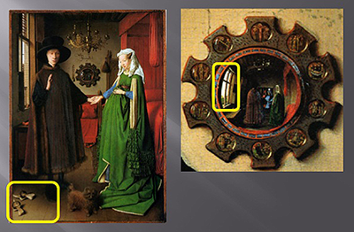
Figure 3
When we view the painting pseudoscopically, looking over the couple's shoulders out to the real space reflected by the mirror, we are able to see the source of that light: a second window situated in that real space. The two windows operate like the adjoining parts of a hinge holding the chamber's real and virtual dimensions together. In replaying the complex information contained in the interference patterns created at the site of the mirrors, we thus experience the scene as a volume of space offering us multiple -- and often unexpected -- perspectives. Like a multi-channel hologram that has an ability to "consist of several other holograms, used as objects within the larger hologram but having their own imagery and space within the larger space," the London panel contains a complex array of dimensions. [25] Digital media artists such as holographer Paula Dawson strive for similar effects; thus, Murray cites Rebecca Coyle and Philip Hayward's summation of Dawson's Working Model One. Based on the Church of Sant'Agnese, her holographic installation was designed to alter "according to different viewpoints." [26]
The "astonishing optical directional force" of the convex mirror travels along an axis of time as well as space, enclosing the viewer standing in the chamber's threshold in a pocket of time where past, present and future intermingle. Indeed, we find created here what Deleuze describes in cinematic terms as a "new depth," the formation of "a region of time, a region of past which is defined by optical aspects or elements borrowed from interacting planes." [27] We also find in this work interacting/interfering planes/wavefronts wherein Bergsonian sheets of time are enfolded. Edwin Hall acknowledges this miraculous quality of enfolding in the London panel:
Functioning like a wide-angle lens reflecting an inverted view of much of the interior space of the picture, the mirror also extends a reverse perspectival system out beyond the picture's surface into the space originally occupied by the painter and his companion, as well as -- forever after -- by every viewer who stands before this extraordinary work. [28]
Once again, we witness a close connection between the product of the holographic process and the crystal image which, Deleuze points out, "has to split the present in two heterogeneous directions, one of which is launched towards the future while the other falls into the past. Time has to split at the same time as it sets itself out or unrolls itself." [29] Its virtual dimension jutting into the past and its real dimension jutting into the future, the Portrait operates like Deleuze's crystal in "constantly exchang[ing] the two distinct images which constitute it, the actual image of the present which passes and the virtual image of the past which is preserved." [30] In this respect, Donato Totaro describes the crystal-image as "a shot that fuses the pastness of the recorded event with the presentness of its viewing." [31]
Operating as a hinge between virtual and real (actual) space, the Portrait functions like Deleuze's crystal, which "always lives at the limit." "It is itself the 'vanishing limit between the immediate past which is already no longer and immediate future which is not yet . . .mobile mirror which endlessly reflects perception in recollection.'" [32] Remarkably, the folds created here offer visual demonstrations of Deleuze's notions of how the crystal image mediates past, present, and future:
Thus the image has to be present and past, still present and already past, at once and the same time. . . .The past does not follow the present that it is no longer, it coexists with the present it was. The present is the actual image, and its contemporaneous past is the virtual image, the image in a mirror. [33]
The intermingling of "incompossible" time schemes -- twenty-first century viewers standing beside the projected image of van Eyck -- matches the time-crystal's functions. Citing Bergson, Deleuze describes how "the real object is reflected in a mirror-image as in the virtual object which, from its side and simultaneously, envelops or reflects the real: there is 'coalescence' between the two. There is a formation of an image with two sides, actual and virtual." [34]
This enfolding of multiple time schemes into a unity calls to mind the process of holographic interferometry, a specialized process that allows an object to occupy its "before" and "after" states simultaneously. As Gerald B. Brandt informs us:
When a hologram is exposed, then processed in place, or replaced exactly after processing, it acts as a combination beamsplitter and wavefront combiner, and since it directly compares two wavefronts in real time, it is closely analogous to a classical interferometer. What holographic interferometry offers is the fourth dimension of time. [35]
A compacting or crystallization of time flow occurs in this superimposing of the painter's perspective over our own. The painting encompasses its modern viewers, its "invented onlookers," in a four-dimensional reality. [36] In its ability to contain what Ezra Pound has labeled elsewhere "the four square walls of standing time," the painting encroaches upon the normal divisions or walls we place between the past, present, and future. The Portrait fulfills Deleuze's vision of the crystal-image, whereby "The present is the actual image, and its contemporaneous past is the virtual image." [37] As a four-dimensional construct, the chamber itself juts into the present or, as Deleuze states of the crystal image, it "tips over into a past and a future of which the present is now only an extreme limit, which is never given." [38]
The Portrait goes a long way towards verifying one aspect of relativity: that time is a fourth dimension of space. The curvature of the mirror bends and refracts space into multiple images of time. Assimilating its multitude of viewers to an ever-present "now" as they stand in the threshold of the fully dimensionalized chamber, the Portrait offers multiple exposures over time. It functions as a time-dimensional camera. Interestingly enough, Deleuze cites his own medieval source in attempting to define the illimitable temporality of the crystal-image:
Adopting St. Augustine's fine formulation, there is a present of the future, a present of the present and a present of the past, all implicated in the event, rolled up in the event, and thus simultaneous and inexplicable. [39]
Establishing complementarity between the past and the future, the technologically informed postmodern narrative allows us to define the relationship between the "past" and "future" as neither one-way nor necessarily oppositional. For example, in The Bohm-Biederman Correspondence, David Bohm and the painter Charles Biederman engage in lively discussions concerning art's relationship to the universal, the nature of time and human freedom, and the question of ambiguity. In essential agreement, both correspondents break down the wall between past and future, the idea that the past, in a one-way flow into the future, absolutely determines what the future will be. Bohm speculates on the possibility of genuine freedom:
For it becomes impossible that the past shall completely determine the future, if only because there is no way to say unambiguously what the past really was until we know its future. In other words, as in a work of art, each part acquires its full meaning only in its relation to the whole. [40]
Biederman suggests "that if the past is always implying, in some way and degree, the newness of the future, the future is always in the process of implying, in some way and degree, a newness to the past" (24). Bohm goes further in restating the passive constructions in Biederman's formulation of the relationship between past and future:
If we assert that the past is inherently ambiguous as to what it is, at least to begin with, then we leave room, logically speaking, to assert further that the future changes the past, in the sense that future developments remove some of the ambiguity in what the past was. [41]
Occupying four dimensions, the London panel makes its own conjectures about its future viewers by including them in its spatial composition. It offers an impressive demonstration of Bohm's thesis that the ambiguous nature of the past owes its resolution to future developments. Deleuze also comments on the indissoluble unity of past, present and future:
First, there is no present that which is not haunted by a past and a future, by a past which is not reducible to a former present, by a future which does not consist of a present to come. Simple succession affects the presents which pass, but each present coexists with a past and a future without which it would not itself pass on. [42]
Deleuze argues that "what we see in the crystal is time itself, a bit of time in the pure state, the very distinction between the two images which keeps on reconstituting itself." [43] Van Eyck's delicately fashioned figures and objects take on a special character, enfolded as they are in multiple sheets of time. In this regard, form follows function. Thus, Jan Bedaux informs us that the mirror was "among the favorite presents a man could give to his beloved." [44] He also notes that such paintings as this one often served as a gift for the bride, a "Morgengabe [that] might [also] consist of all sorts of valuables, such as trinkets, or even a completely furnished room specially for the bride." [45] A "miracle of composition" in either fifteenth or twenty-first century terms, the painting is itself the room Bedaux speaks of. Its witnesses or guests have been arriving for over five hundred and seventy-five years. The Portrait stands, quite literally, as an epithalamium accomplished in space/time.
2. An invitation to recollect. . .
Invoking our visual reconstruction of its dimensions, van Eyck's work shares with holography a common center in that holography has been proposed as a model for the operations of mind and memory invoked in this Portrait. Describing the hologram's ability "to modulate time (time in space)," Jackson suggests that the holographic process may hold the key to how the mind stores and reconstructs images for later playback:
Because holography records reality as a total three-dimensional volume of "activity", it has the effect of encapsulating time. It is as if a hologram is a record of a space of time, or a time in space: a precise moment which can be recalled exactly as it existed when the recording of it took place -- when it "happened". (Many people believe that holography is the brain's memory storage mechanism.) [46]
Neurophysiologist Karl Pribram draws an analogy between the holographic process of recording an image by wave-interference patterns imprinted on film emulsion and the brain's own electrochemical operations within its neural network of ten billion cells. [47] Various impulses from nerve cells are seen as combining and interfering to create a field of activity through which an image (or, more precisely, a patterning) is imprinted chemically in the neural cell system in much the same way that wave patterns of light are printed on the film emulsion. Once stored, this patterning can be reactivated by selected neural firings that recreate the conditions in which the memory was formed. This neural field of activity (or frequency domain) by which a memory is encoded for later reconstruction and replay is imprinted in the painting's "emulsion" to the extent that the work allows us to reconstruct the initial conditions in which this image was recorded and stored. Like the holographically stored memory, the double mirrors allow viewers to participate in the same frequency domain or field that van Eyck left imprinted there as the evidence of his witnessing.
Our processing of van Eyck's work as a reconstructed space offers some confirmation of the holographic paradigm for memory. One modern instance of holographic memory will provide instructive parallels to what van Eyck has achieved. The theory that the mind records memories holographically is advanced anecdotally by the neurophysiologist Oliver Sacks in his An Anthropologist on Mars. In a chapter entitled "The Landscape of his Dreams," Sacks explores the fascinating case of Franco Magnani, a painter who inexplicably started to experience compelling visions of his childhood village of Pontito. These "visions," Sacks informs us, were "emotionally overwhelming but with a minute and three-dimensional quality that he [Magnani] compares to holography." [48]
In equal measures, Magnani seemed to be both blessed and beset by a memory that could seemingly reproduce with almost photographic accuracy every building, every street, every stone of Pontito, far away, close up, from any possible angle. It was as if Magnani held in his head a finitely detailed three-dimensional model of his village, which he could turn around and examine, or explore mentally, and then reproduce on canvas with total fidelity. [49]
Magnani's friend, Bob Miller, describes the painter's visionary powers in terms quite familiar to anyone who has viewed a hologram: "It's as if he had this 3-D construct, this model of Pontito, he can erect -- he moves his head, turns around, to see different aspects" [50]. Describing the "memory flash" that initiates this holographic scene for Magnani as more than a static, photographic view of Pontito, Michael Pearce notes:
He can scan the area and "see" in several directions. To do this, he must physically reorient his body, turning to the right to envision what would be to the right in the Pontitan scene, to the left to 'see' to that side, his eyes looking into the distance as though he can see the stone buildings and archways and streets. [51]
A similar participation mystique engages the viewers of the Arnolfini Portrait. Because the portrait encodes information in a format mimicking our own mental processes, we become actively engaged -- fascinated and absorbed -- in decoding the way that it works. What we are "viewing" is our own reconstruction of a multidimensional reality that literally enfolds us. As Seidel observes, we as viewers are "reengaged" in our own space. [52] This enfolding of the viewer in the mirrored space calls to mind Jackson's assertion that we do not so much look at a hologram as we look into it and, apparently, out of it as well. Indeed, the Portrait is set up in much the same fashion as a holographic information storage and retrieval system proposed by Ronald Kay (here superimposed over the scene). [53]
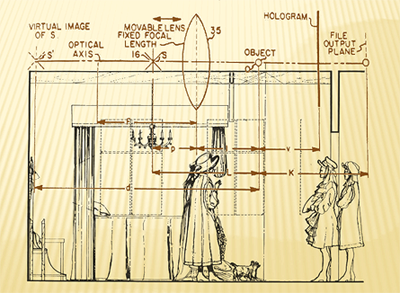
Figure 4: Adapted from Janine Debanné and Ronald Kay.
In Kay's system, documents are recorded holographically and stored. A matching of the virtual and real images allows the document to be separated and retrieved from other documents stored in the system. A similar matching occurs for the viewers of the double portrait: these viewers "retrieve" the memory of this scene by matching the virtual image of van Eyck with his real image that is now projected to the position they had just occupied in initially viewing the scene. Engaged in reconstructing this scene, viewers share in this memory of it. Van Eyck signals he is "here" by the signature on the wall in virtual space, but he also signals he is "there," in the real space projecting from the panel. Cusa speculates about just such an enterprise accomplished by van Eyck:
Suppose a painter wanted to put his very self in the painting, but because he himself could not be multiplied, by painting a self-portrait just his image came into being. For an image, no matter how perfect, if it cannot be more perfect and conformed to its model, never is as perfect as any imperfect image which has the power of corresponding more and more without limit to its unreachable original. For in this it imitates infinity in manner of an image as best it can. It is as if a painter made two images of himself, and the dead one seemed really more like him, while the other seemed less like him but alive, in such a way that when put into motion by its object it could always make itself more conformed [to its original]. No one would hesitate to call the second more perfect as imitating better the art of the painter. [54]
We can think of this "dead" image as that contained in the mirror, what is labeled a negative image in holography. Its magnitude is less than unity. The "living" image corresponds to the real image projecting from the painting, what is labeled a positive image in holography. Its magnitude is equal to unity. As Kay points out, "The hologram thus acts simultaneously as a positive and a negative lens with a built-in object." [55] It is the real image that conforms more perfectly to its model by projecting out to the space once physically occupied by its model as well as by representing a space equal to its original. This positive image is "put into motion by its object," van Eyck and a near-infinite series of second witnesses.
No mere museum piece, van Eyck's Portrait hangs in a fourth-dimensional gallery, waiting on visitors yet to be born. Van Eyck "objectifies" the viewers as part of the composition in that we stand beside him like the unidentified witness -- who is perhaps holding our place for us! As Seidel remarks, the painter "fixes the connection between viewer and painting in a present of infinite duration." [56] As "objects" in the composition, we the witnesses are part of a near-infinite storage and retrieval system enlisted in advance by the painter as the future recipients of the couple's vow of betrothal. Such vows, known as verba de futuro, are now enfolded and completed in van Eyck's work, demonstrating the painter's nearly divine mastery in assimilating his mind "to every magnitude" and "to all time." [57]
3. The Living Mirror
In the crystal-image there is this mutual search -- blind and halting -- of matter and spirit.
-- Deleuze [58]
A gentleman-painter laboring for the privileged class, van Eyck was certainly no mystic in Cusa's mold. Indeed, noting their reflectographic analysis shows that supposedly highly symbolic items such as the dog, the shoes, the candle, chandelier, and beads were not part of the underdrawing, Campbell and Billinge assert "It can no longer be maintained that van Eyck was working to a symbolic programme carefully mapped out in advance. . .[these items having] been put in at rather a late stage." [59] Seidel goes even farther, claiming the Portrait "masquerades as a religious painting." [60] Van Eyck's primary intention here might very well have been nothing more than to celebrate his own skill in this immortalizing of his witness of and withness in this scene. Cusa, fully aware of the dangers of egotism and the lure of materialist culture, would likely look beyond any personal aggrandizement or attempt to add religious trappings to the painting. However imperfect the artist and his patrons might have been, Cusa would have agreed with Bedaux's estimation that van Eyck exceeded all limits in creating this Portrait: "There was nothing in the world existing in quite this form until it was imagined and set forth by this particular artist." [61]
Had Cusa himself ever encountered the painting, he would no doubt have recognized in it the instantiation of his own philosophical quest to define divine vision. For example, in his The Layman: About Mind, Cusa links the aesthetic to the divine. He speaks of the mind's capacity for enfolding a world in itself. While the infinite mind has the absolute power of giving form, the finite mind possesses "the power to con-form or to shape in like form." [62] For the Layman, mind is added to matter as "a living mirror" reflecting its exemplar as "a living image of God." [63] As an enfolding of the infinite simplicity, mind constitutes "the domain or region of the necessity of connection" between the finite and infinite, the temporal and the eternal. [64] This enfolded quality demonstrates the truth of Craig Harbison's description of van Eyck's images as "rich narratives of worlds both seen and unseen, real and illusory, public and private, sacred and secular, worlds which overlap and are ultimately indistinguishable" [65]. In his own treatise on the crystal image, Deleuze also waxes poetic and mystical in discussing the multilayered "circuitry" involved in the crystal-image, which has
... these two aspects: internal limit of all relative circuits, but also outer-most, variable and reshapable envelope at the edges of the world, beyond even moments of world. The little crystalline seed and the vast crystallizable world: everything is included in the capacity for expansion of the collection constituted by the seed and the universe. [66]
Remarkably, the Layman's explanation of the mind as a reflection of the infinite simplicity echoes the language and conceptions of some modern day theorists who argue in terms often indistinguishable from Cusa's that the mind is a reflection of a universe which itself may be holographic. Bohm seems the very incarnation of Cusa in setting out his own notion that the universe is an enfolded, implicate order of things, an order quite at odds with the concepts of Cartesianism: "Every aspect of the universe is itself a whole, a full being, a comprehensive system in its own right, containing within it a complete store of information about itself." [67] In temporal terms, the Portrait affirms the implicate order that Bohm postulates as the very nature of things in a universe governed by a holographic paradigm: "Within the holographic paradigm, time does not exist as a ticking away of moments forever traveling linearly from 'now' to 'just then.' Instead, time might very well exist multidimensionally moving in many directions simultaneously." [68]
The Layman emphasizes the mind's assimilative powers, its ability to incorporate what is temporal and finite, unfolding, into an image that points toward the eternal and infinite, the enfolded:
PHILOSOPHER: It seems that mind alone is God's image.
LAYMAN: Properly so, since all things which follow on mind are not God's image except insofar as mind itself is reflected in them. [69]
The Layman next proceeds to distinguish the image, an enfolding in a unity, from what is plural, "an unfolding [explicatio]":
So the equality of unity is image, not unfolding. I mean that mind is the most simple image of the divine mind amid all the images of the divine enfolding which comprises in its simplicity and power every image of enfolding. As God is the enfolding of enfoldings, so the mind, God's image, is the image of the enfoldings of enfoldings. After the images comes the plurality of things: these unfold what is folded up in God, just as number unfolds unity, motion unfolds rest, time unfolds eternity, composition unfolds simplicity. [70]
The Portrait upgrades our capacity for knowing by multiplying the possibilities of perspective. No longer limited to a single perspective, we begin to approach the "sphericity" of Divine vision, as extolled by Cusa in his The Vision of God:
But the angle of Thine eye, 0 God, is not limited, but is infinite, being the angle of a circle, nay, of an infinite sphere also, since Thy sight is an eye of sphericity and of infinite perfection. Wherefore it seeth at one and the same time all things around and above and below. [71]
As evidenced here, "reflectographic" analysis of the Portrait can take us from fifteenth-century notions of divinity to twenty-first century notions of a holographic universe. Nor does this spectrum always break down into a religious versus secular binary. For example, Murray observes a number of digital media artists as "soliciting a unifying, spiritualizing aesthetic," an offshoot perhaps of the Baroque's evocations of "mystical or universalistic sensibilities." [72] Dawson, for example, took full advantage of the hologram's potential for creating "otherworldly" effects in her The Shrine of the Sacred Heart:
The Shrine was highly original in that it allowed the viewer to experience a simulated vision by feeling suspended in space over the inverted dome of the church, and incorporated a mirage-like flame into which viewers could place their hands. [73]
Whatever van Eyck's own intentions might have been in executing this scene, he has [inadvertently] fulfilled Cusa's requirements for enfolding and unfolding time and creating a Divine perspective through this scene. Given the sacramental quality of what is portrayed here, Cusa would point out that the Portrait's transcendent qualities succeed in suggesting the necessary Divine witnessing before this scene. Those more interested in conjecturing on a human scale will discover the London panel offers an equally intriguing demonstration of our perceptual processes at work.
4. "Intellectual" Eyeglasses and Fourier Transforms
In the film, Forbidden Planet, the father says/ I can make it real because I see it exactly in my mind. It is the same for me. I can make my project because I can see it in my mind exactly as it has to be.
-- Paula Dawson ("Creation") [74]
As much as Cusa discusses the God's-eye perspective, Miller identifies his "original insight" in locating "the image of God's creating in human mental production of conjectures." [75] Indeed, as Albus indicates, he set for himself the task of searching out "the breadth and depth of our active mental lives." [76] His treatise on the beryl, for example, is subtitled On [Intellectual] Eyeglasses. Albus observes that it is Cusa's involvement in optics -- reflectiveness -- that aligns him most closely with van Eyck:
Neither the zeitgeist nor mysticism are required to explain the correspondences between the greatest painter of the time and the greatest thinker. Van Eyck and Nicholas of Cusa stand in the same tradition, rooted in classical antiquity. In the works of both, reflectiveness is a virtue wrested out of dark times to offer a guiding light. [77]
For Albus, Cusa serves as a philosophical lens for viewing van Eyck's accomplishments:
In a reflecting eye set in a frame, the artist has thus summed up the past, the present, and the future. His paintings show the world as if seen through beryl -- the eyeglass described by old Nicholas of Cusa, polished into a simultaneously concave and convex form, a gleaming white, clear crystal through which one sees that the largest things coincide with the smallest. [78]
Cusa was very aware of the practical virtues of the beryl in the fashioning of eye-glasses, but he also seized upon the beryl's metaphorical properties: "If an intellectual beryl that had both a maximum and a minimum form were fitted to our intellectual eyes, then through the intermediateness of this beryl the indivisible Beginning of all things would be attained." [79] Intermediateness has also drawn Deleuze toward the time-crystal image, although he asserts his interest is more of a "general" or "aesthetic" than a "scientific" one. As we are now discovering, however, crystals are comparable to "inorganic" holograms, displaying Bragg diffraction effects "analogous to [those of] optical holography with one beam ... acting as a phase reference for the second." [80] Multibeam interference lithography, for example, is now employed to create photonic crystals for information storage and transmission. Fellow crystallographers Cusa and Deleuze have thus seized upon the metaphor that van Eyck has instantiated in his own work.
On the organic front, Pribram argues the holographic process is the basis of human perception and memory formation. For Pribram, the spatio-temporal dimensions explored by Cusa, van Eyck, and Deleuze involve, above all, information transfer and coding. He reminds us that Dennis Gabor, who postulated holography a few decades before the first hologram could be technically achieved, "called his mathematical formulation a hologram." [81] Thus, for all its visual appeal, the hologram is not an image, but an encoding system for wavefronts of all types -- photonic as well as the electrochemical ones of the brain's neural circuitry. Pribram employs the Fourier transform to discuss this transfer and encoding, from the cellular level to optical processing to the brain/mind relationship and, finally, to investigations of the quantum realm. Employed in image processing, the Fourier transform breaks down an image into its sine and cosine components, thereby facilitating such processes as image analysis, filtering, reconstruction, and compression. The transform encodes image information holistically, in a distributed manner. Each point of the object in the spatial domain can be stored as a frequency in the Fourier domain, a transform that makes for a more ready modulation, scaling, enhancement, or convolution of the image.
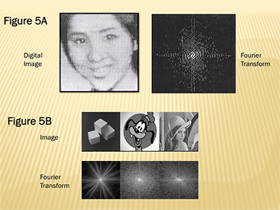
Figure 5A: Y. Ichioka, M. Izumi, and T. Suzuki, "Digital Picture Processing" in Applications of Holography (New York: Plenum Press, 1971), 210.
FIgure 5B: "Introduction to the Fourier Transform" http://www.cs.unm.edu/~brayer/vision/fourier.html
As Raghu Muthyalampalli informs us: "The Discrete Fourier Transform (DFT) is a specific form of Fourier analysis to convert one function (often in the time or spatial domain) into another (frequency domain)." [82] In 1969, C. Blakemore and F. W. Campbell theorized that the neurons in the visual cortex might process spatial frequencies instead of particular features of the visual world. [83] Ut picture poesis becomes ut frequentia noesis. The transform is thus particularly suited for dealing with a mirror that Albus describes as "dissolv[ing] the boundaries of pictorial space like a real mirror and the boundaries of time like a magical one." [84]
Like Cusa's identification of the beryl as an intellectual eyeglass, the Fourier "eye-glass" allows us to negotiate our way between the spatial and frequency domains, now no longer seen as mutually exclusive but as encoding reciprocal values. Employing the inverse Fourier transform, we can re-transform the Fourier image to the frequency domain, a form of "conjecturing" that would have been of interest to Cusa. Thus, in his discussion of Cusa's On Conjecture (De coniecturis), Miller informs us that conjecturing involves for Cusa a mental act of measuring or "unfolding" either the whole numbers of arithmetic (multitude) or the shapes of plane and solid geometry (magnitude); these conjectures thus involve abstractions of "numbered things or of bodies existing in space and time" [85]. Predictably, the beryl is the place to start:
For in seeing one contrary through the beryl, you will see that in it the beginning of the other contrary is present. Therefore, since in the one contrary the beginning of the other contrary is present, their transformations are circular, and there is a common subject for each contrary. [86]
For Cusa, "mathematical entitites and numbers ... are not substances or beginnings of perceptible things" but simply our mind's way of mediating the world's "quiddity." As he explains:
The intellect focuses its considerations on those figures and on intellectual numbers because, being of intelligible matter, they are simpler than are perceptible objects. And since our intellect derives all its [contents] through the senses, it supposes that -- by means of those incorruptible and quite subtle figures, freed from perceptual qualities -- it can apprehend, at least in terms of a likeness, everything attainable. [87]
No doubt, Cusa would have been as intrigued as Pribram by Fourier transforms, with their ability to model our interactions with the external world through our perceptions. These transforms are employed in such real world applications as facial recognition software and point-by-point motion analysis. The advantage gained by transforming into the spectral domain is that a great variety of transformed patterns can be readily convolved (multiplied) so that by performing the inverse transform the patterns have become correlated. For Pribram, Fourier functions govern the neurological and waveform feltwork behind our visual and memory processes.
If Fourier principles are descriptive of our visual processing of the Portrait, we should be able to rely on them to test out Albus's claim that "The process of perceiving van Eyck's paintings repeats the process in which they were made" [88]. We know from the underdrawing that van Eyck adjusted several times the size and the placement of the mirror as he sought to set up the conditions in which it would interact with the surface plane mirror in his own and his later viewers' conjectures and reconstructions of this scene. In van Eyck's initial conception of the mirror, we can readily view the "interference patterns" demarcating alterations the painter made in adjusting the mirror's size and placement in the overall scene whose dimensions it was designed to capture for playback. Spectroscopic analysis allows us the necessary "intellectual eyeglasses" to be privy to these alterations, whose displacements offer us images along a space/time continuum indicating the Portrait's evolution.
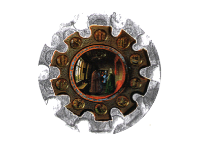
Figure 6
They are, in a sense, the visual correlation of the frequency patterns through which the scene was conceptualized. Of course, we are only privy to these adjustments through reflectographic analysis. Nonetheless, this analysis does serve to remind us that a great deal of effort went into "tuning" the mirrors, virtual and real, for our own eventual processing and playback of their relationship.
Interesting enough, it may well have been van Eyck's intention for viewers to focus on the surround of the mirror as much as the mirror itself. In this vein, Clifton Olds observes that sight lines along the floorboards lead viewers' gazes to a point just below the mirror while those along the ceiling lead to a point just above the mirror. According to Olds, the mirror is left "out of the spatial construct" so that God's aperspectival point of view, which is not finite, could be suggested. [89] Focusing on the mirror's frame, we discover that it plays a role in our own engagement with this mirrored scene. For example, the small rim encircling the mirror, with its shiny, bluish-tint rectangular insets, imparts a subtle energy and focus to the Portrait. No doubt, too, the scenes from Christ's Life and Passion underscore the religious element here, perhaps suggesting the painter was aiming for a God's-eye point of view.
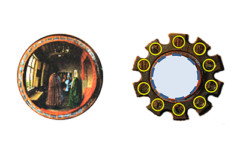
Figure 7
Could it be that in his figuring out and adjusting of the interplay of the virtual mirror with the surface plane mirror that van Eyck's choice of the pattern for the mirrors' outer boundary records traces of the Fourier transform at work here? If Fourier transforms lie behind the interference effects created in our processing of the finished Portrait, then we might expect to find traces of a similar fringing process at the site of the mirrors, where the greatest intensity of interference occurs. Such patterns of interference are studied closely in spectroscopic analysis. Of particular interest are quartz crystals which, being piezoelectric, expand or contract in an electric field, displaying interesting patterns at various intensities of oscillation. In states of high frequency oscillation, these crystals display the characteristic patterns of nodes and antinodes created as a result of the destructive or constructive interference of wave patterns.
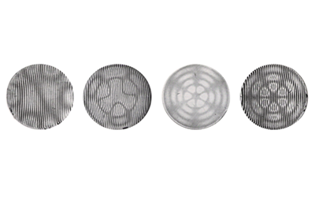
Figure 8
The greater the intensity of these oscillations, the more these nodes and antinodes are pushed to the outer boundary. For example, in the high-intensity oscillations induced upon the quartz crystal, where a very big amplitude has been imposed upon the crystal, we find a pattern of scalloped radial nodes indicating a high-intensity overlapping of multiple orders of interference.
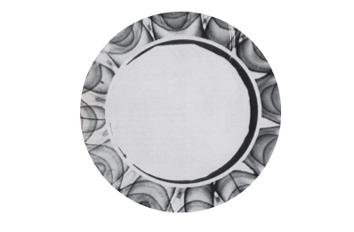
Figure 9a: S. Tolansky, Microstructures of Surfaces Using Interferometry (New York: Elsevier, 1968), 39.
The Portrait's own surrounding boundary offers preliminary evidence that a similar pattern of high-intensity interference is occurring here. We find scalloped slots radiating from a center.
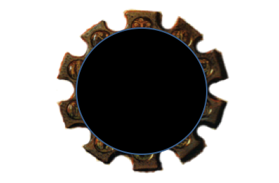
Figure 9b
Indeed, the mirrors' crenellated boundary evidences its own pattern of troughs (nodes) and crests (antinodes) similar to those indicating the action of interfering wave patterns.
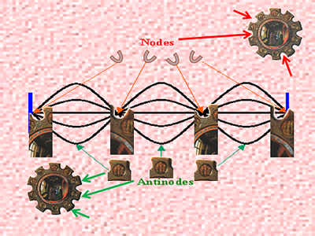
Figure 10
This boundary appears cognate with the cognitive process that arranged for this scene to be reconstructed. They are visible registers of the manner in which van Eyck arranged for the viewers' processing of the wavefronts created by the two mirrors.
These fringes at the painting's boundary reflect two-point source interference patterns, in the Portrait's case, the interplay of the two mirrors in the viewers' reconstructions of this holographically rendered scene. Thus, the virtual plane and surface plane mirrors are comparable to the masks or slits that physicists employ to create diffraction patterns of light sources at various angles of scattering. While the large-scale features in the center remain constant, we find varying patterns representing small-scale features around the periphery.
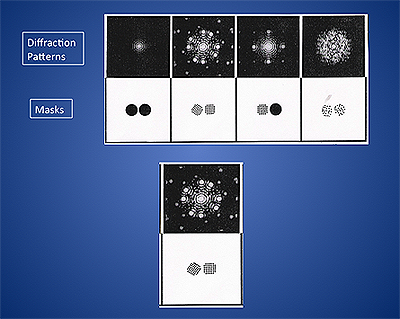
Figure 11: Taylor, 132.
When the masks are almost identical, with only slight displacement or tilt, we find a high degree of symmetry in the resultant diffraction pattern. As Charles A. Taylor points out, such patterns are "beautiful because of their high symmetry and [they are] also very full of structural information" [90]. Indeed, viewers may find the electron diffraction pattern created by one such masking leaves an image that has more than one familiar ring to it.
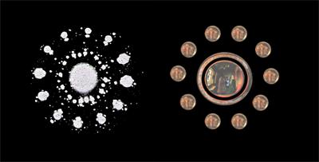
Figure 12: Taylor, 177.
If we were to adjust the two slits so that the interfering waves resulted in ten rather than twelve circles in the outer ring, it is likely that the two patterns would provide an even more exact match, particularly with the areas marked by Christ's life and passion, but even a superimposition of the diffraction grating over the mirror demonstrates a close match.
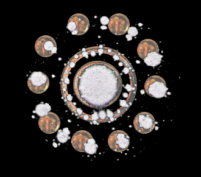
Figure 13A
If we were able to record our visual processing of the mirrors through an interferometric analysis of the frequency patterns involved here, we might find the overlaid nodes and antinodes revealing a pattern something like the image below, eerily reminiscent of the crenellated crests and troughs of van Eyck's creation.
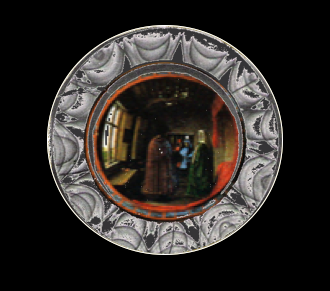
Figure 13b
Operating like a pair of Cusa's "intellectual eye-glasses," the interplay of the two mirrors allowed for the original scene to be recorded and then stored for later playback by its viewers.
What this patterning suggests is that the Fourier transform is indeed at work here in the viewers' processing of the interplay between the two mirrors as they allow for the reconstruction of this scene. In setting forth the conditions for reconstructing this scene, van Eyck may very well have offered the most compelling proof yet that the Fourier transform is intricately tied up with our visual processes. The mirrors themselves seem cognate with the viewers' own cognitive process in allowing us to draw the composition into focus and reconstruct its spatio-temporal dimensions. Strangely enough, we return here to Panofsky's conception of "disguised symbolism" in the painting; this time, however, the symbolism is optical in nature: the Fourier transform as icon! The Portrait is, indeed, Deleuze's opsign realized.
5. Patterns of Interference and Crystallization
Après moi le Déleuze.
-- Van Eyck (undated)
Setting aside the playful jab at Deleuze above, he himself acknowledged that concepts such as those pertaining to cinema should not be limited to specific disciplines, practices, and eras. Deleuze argues that "Everything prehends its antecedents and concomitants and, by degrees, prehends a world. The eye is a prehension of light. . . .At a given moment the pyramid prehends Napoleon's soldiers (forty centuries are contemplating us), and inversely." [91] Indeed, he proceeds to point out that "It is at the level of the interference of many practices that things happen, beings, images, concepts, all the kinds of events." [92] In the final analysis, what renders van Eyck's Portrait a "miracle of composition" is its crystallinity, the patterns of interference it sets up between past and present, the local and the transcendent, secular and religious. Thus, it can accommodate, though not entirely reconcile, divergent points of view, particularly in the last binary. For Cusa, van Eyck's efforts to substantiate his presence have conformed his own mind to that of God, but even Cusa saw a worldly value in the enterprise. In reviewing Cusa's theory of how we can come directly to knowledge of God's infinite reason, Miller describes two "simultaneous movements":
... in one we move more deeply into ourselves only to discover that God's mind is "the single living center" of the human mind. In the other we ascend from sense perception to intellectual vision toward the infinite reason, becoming more likened to it as we construct the mental universe out of our own resources, just as God does the real world. Ultimately the same knowing activities encompass both movements. [93]
Holographic theorists put a more secular spin on how the mind mirrors an all-encompassing universe. Nonetheless, their vision of a universe in which the brain's own neurophysiological functions can be themselves "uploaded" into the larger cosmological scheme of the holomovement reflects the enfoldedness of Cusa's own philosophical positions. Reviewing Bohm's ideas shortly after his death in 1992, David Pratt indicates how central holography was to his thinking:
Bohm suggests that the whole universe can be thought of as a kind of giant, flowing hologram, or holomovement, in which a total order is contained, in some implicit sense, in each region of space and time. The explicate order is a projection from higher dimensional levels of reality, and the apparent stability and solidity of the objects and entities composing it are generated and sustained by a ceaseless process of enfoldment and unfoldment, for subatomic particles are constantly dissolving into the implicate order and then recrystallizing. [94]
The holographer would recognize in the Portrait the crystallization of a holographic universe. The enfoldedness of van Eyck's work ensures that it contains -- like the hologram -- a "complete store of information about itself." Moreover, this store of information extends beyond the dimensions of the chamber, moving out from the local and specific to the universal and the transcendent. Containing a fourth-dimensional reality in a two-dimensional format, the Arnolfini Portrait stands both as a medieval exemplum and a postmodern icon. It provides, like the hologram itself, a "window effect," a privileged view into the implicate order.
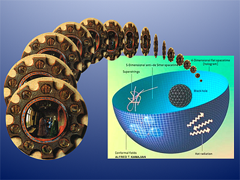
Figure 14: Alfred T. Kamajian http://www.essentia.com/discovery/holographic_spacetime.htm
Notes
-------------------
[1] Rachel Billinge and Lorne Campbell, "The Infra-red Reflectograms of Jan van Eyck's Portrait of Giovanni (?) Arnolfini and Wife Giovanna Cenami (?)" National Gallery Technical Bulletin 16 (1995): 47-60.
[2] Erwin Panofsky, "Jan van Eyck's Arnolfini Portrait" Burlington Magazine 64 (1934): 117-27.
[3] Linda Seidel, "Jan van Eyck's Arnolfini Portrait: Business as Usual?" Critical Inquiry 16 (1995): 55-86.
[4] Craig Harbison, Jan van Eyck: The Play of Realism (London: Reaktion Books, 1991), 11.
[5] Anita Albus, The Art of Arts: Rediscovering Painting, trans. Michael Robertson (New York: Alfred A. Knopf, 2000), 45.
[6] Gilles Deleuze, Cinema 2: The Time Image. Trans. Hugh Tomlinson and Robert Galeta (Minneapolis: U of Minnesota Press, 1989), 107.
[7] Christopher Outwater and Eric Van Hamersveld, A Guide to Practical Holography (California: Pentangle Press, 1974), 19.
[8] Arthur Klein, Holography (New York: J. P. Lippincott Company, 1970), 67-68.
[9] Otto Pacht, Van Eyck and the Founders of Early Netherlandish Painting. Trans., David Britt (London: Harvey Miller Publishers, 1994), 105.
[10] David L. Carleton, "Mathematical Analysis of Perspective," Art Bulletin 64 (1982): 124.
[11] Joseph Van Der Elst. The Last Flowering of the Middle Ages (New York, 1946), 65.
[12] Cinema 2, 5.
[13] Anna Munster, "Digitality: Approximate Aesthetics" http://www.ctheory.net/articles.aspx?id=290 March 14, 2001. (Accessed August 15, 2010.)
[14] Rosemary H. Jackson, "Through the Looking Glass." Brochure. New York: Museum of Holography, 1978.
[15] Outwater, 33.
[16] Carol Purtle.
[17] Timothy Murray. Digital Baroque: New Media Art and Digital Folds (Minneapolis: U of Minneapolis Press, 2008), 98.
[18] Myron Shapiro (Icon 144).
[19] Cinema 2, 83.
[20] Cinema 2, 108.
[21] Cinema 2, 83.
[22] Cinema 2, 70.
[23] Murray, 102; 95.
[24] Outwater, 33.
[25] Jackson.
[26] Murray, 44.
[27] Cinema 2, 108.
[28] Edwin Hall. The Arnolfini Betrothal: Medieval Marriage and the Enigma of Van Eyck's Double Portrait (Berkley: U of California Press, 1994), 128.
[29] Cinema 2, 81.
[30] Cinema 2, 81.
[31] Donato Totaro, "Gilles Deleuze's Bergsonian Film Project." March 31, 1999. http://www.horschamp.qc.ca/9903/offscreen_essays/deleuze1.html (Accessed August 15, 2010.)
[32] Cinema 2, 81.
[33] Cinema 2, 79.
[34] Cinema 2, 68.
[35] Gerald B. Brandt, "Holographic Interferometry" in Handbook of Optical Holography. Ed. H. J. Caulfield (New York: Academic Press, 1979): 467.
[36] Linda Seidel. Jan van Eyck's Arnolfini Portrait: Stories of an Icon (Cambridge: Cambridge UP, 1993), 153.
[37] Cinema 2, 79.
[38] Cinema 2, 38.
[39] Cinema 2, 100.
[40] David Bohm and Charles Biederman. Bohm-Biederman Correspondence. Ed. Paavo Pylkkanen (London: Routledge, 1999), 15.
[41] Bohm, 29.
[42] Cinema 2, 37.
[43] Cinema 2, 82.
[44] Jan Baptiste Bedaux, "The Reality of Symbols: the Question of Disguised Symbolism in Jan van Eyck's Arnolfini Portrait" in Simiolus: Netherlands Quarterly for the History of Art 16 (1986): 22.
[45] Bedaux, 13.
[46] Jackson. Brochure.
[47] Karl Pribram, "Brain and Mathematics" in Brain and Being: At the Boundary Between Science, Philosophy, Language and Arts (Philadelphia: John Benjamins Publishing Company, 2004): 217-40. See also: Languages of the Brain: Experimental Paradoxes and Principles in Neurophysiology (New Jersey: 1971) and "Some Dimensions of Remembering: Steps Toward a Neurophysiological Model of Memory" in Brain and Behavior. Ed. Karl Pribram. Vol. 2. Baltimore, 1969.
[48] Oliver Sacks. An Anthropologist on Mars: Seven Paradoxical Tales (New York: Knopf, 1995): 161-2. Magnani recreates his vision in a website: "A Memory Artist: An Artist Paints His Childhood Home from Memory." http://www.exploratorium.edu/memory/magnani/construct_4.html
[49] Sacks, 153.
[50] Sacks, 161.
[51] Sacks, 162.
[52] Linda Seidel. Jan van Eyck's Arnolfini Portrait: Stories of an Icon (Cambridge: Cambridge UP, 1993), 98.
[53] Ronald H. Kay, "Information Storage and Retrieval System." Patent 2,982,176 (U.S.).
[54] Nicholas of Cusa. The Layman About Mind (Idiota de Mente), trans. Clyde Lee Miller (New York: Abaris Books, 1979), 87.
[55] Kay, 19.
[56] Icon, 133.
[57] Layman, 51.
[58] Cinema 2, 75.
[59] Billinge and Campbell, 59.
[60] Seidel "Business" 84.
[61] Bedaux, 34.
[62] Layman, 51.
[63] Layman, 67.
[64] Layman, 73.
[65] Play, 47.
[66] Cinema 2, 81.
[67] Renee Weber, "The Enfolding-Unfolding Universe: A Conversation with David Bohm" in The Holographic Paradigm, Ed. Ken Wilber (Boulder: Shandala Press, 1982), 110.
[68] Bohm, 112.
[69] Layman, 51.
[70] Layman, 51.
[71] Nicholas of Cusa, The Vision of God, trans., Emma Gumer Salter (New York: Frederick Ungar Publishing Co., 1928/69), 38.
[72] Murray, 38; 39.
[73] Paula Dawson, "Creation: Interview with Paula Dawson July 2006." http://artbridge.info/Bilder/pdf/Interview%20Paula%20Dawson.pdf (Accessed September 5, 2010.)
[74] Paula Dawson. Dictionary of Australian Artists Online. (Accessed September 5, 2010.) http://www.daao.org.au/main/read/7180 (Accessed September 5, 2010.)
[75] Clyde Lee Miller, "Nicholas of Cusa's On Conjectures (De Coniecturis)." Nicholas of Cusa in Search of God and Wisdom: Essays in Honor of Morimichi Watanabe by the American Cusanus Society, ed. Gerald Christianson and Thomas M. Izbicki (New York: E. J. Brill, 1991. 119-140), 122.
[76] Albus, 122.
[77] Albus, 49.
[78] Albus, 46.
[79] Nicholas of Cusa, "De beryllo" ("On [Intellectual] Eyeglasses") in Complete Philosophical and Theological Treatises of Nicholas of Cusa, trans. Jasper Hopkins (Minneapolis: A. J. Banning Press, 2001), 36.
[80] Jenny P. Glusker, with Mitchell Lewis and Miriam Rossi. Crystal Structure Analysis for Chemists and Biologists (New York: VCH Publishers, Inc., 1994), 327.
[81] "Brain and Mathematics," 221.
[82] Raghu Muthyalampalli, "Implementation of Fast Fourier Transform for Image Processing in DirectX 10." September 8, 2009. http://software.intel.com/en-us/articles/implementation-of-fast-fourier-transform-for-image-processing-in-directx-10/ (Accessed June 5, 2010.)
[83] C. Blakemore and F. W. Campbell, "On the existence of neurones in the human visual system selectively sensitive to the orientation and size of retinal images" in Journal of Physiology 203 (1969): 237-260.
[84] Albus, 46.
[85] Miller, 125.
[86] De beryllo, 57.
[87] De beryllo, 60.
[88] Albus, 45.
[89] Clifton Olds. Nicholas of Cusa on Christ and the Church: Essays in Honor of Chandler McCuskey Brooks for the American Cusanus Society, ed. Gerald Christiansen and Thomas Izbicki (New York: E. J. Brill, 1998): 260.
[90] Charles A. Taylor, Images: A Unified View of Diffraction and Image Formation with All Kinds of Radiation (London: Wykeham Publications, 1978), 176.
[91] Gilles Deleuze. The Fold: Leibneiz and the Baroque, trans. Tom Conley (Minneapolis: U of Minnesota Press, 1993), 78.
[92] Cinema 2, 280.
[93] Miller, 123.
[94] David Pratt, "David Bohn and the Implicate Order" in Sunrise Magazine, February/March 1993 http://www.theosophy-nw.org/theosnw/science/prat-boh.htm. Brian Greene demonstrates how wide-ranging the holographic model has proven to be, as when Gerard't Hooft and Leonard Susskind put a reverse spin on Bohm's model:
[they] put forward the startling idea that comings and goings we observe in the three dimensions of day-to-day life might themselves be holographic projections taking place on a distant, two-dimensional surface. The shadows -- the things that are flattened out and hence live on a lower-dimensional surface -- are real, while what seem to be more richly structured, higher-dimensional entities (us; the world around us) are evanescent projections of the shadows -- Brian Greene. The Fabric of the Cosmos: Space, Time, and the Texture of Reality (New York: Penguin, 2005), 482.
----------------
John Freeman is a professor of Renaissance literature at the University of Detroit Mercy. His research interests include articles on the recusant legacy in Shakespeare (Fordham University Press), intellectual property rights in More's Utopia (ELR), and claims by an Irish technology company to have perfected a perpetual motion device (CTheory and Postmodern Culture). His current projects include an essay on Tiger Woods and corporate parenthood. An ongoing project includes a multimedia production employing the frequency hopping invention of Hedy Lamarr as a means both of expressing her life as a "Woman, Interrupted" and exposing the disruptive forces with which she had to contend.
Janine Debanné is Associate Professor of Architecture at Carleton University. Her research interests include the history and phenomenology of architecture; architectural dimensions; modern dwelling; the reception and appropriation of built architecture including documentation from the point of view of dwellers and architects and measurement of existing dwellings; micro-histories (Lafayette, the Outaouais Region); drawing as architectural ideation: sketching, diagramming and embodied experience, mental mapping.
(c) CTheory. All rights reserved.